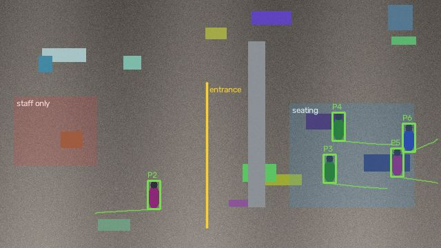
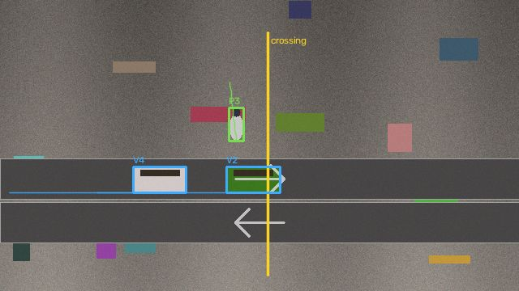
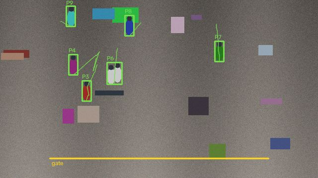

Live demo
Real-Time Video Intelligence · synthetic data · a read-only snapshot of the running app. Forms are switched off here; run it from the repository to try them.
About the project
Code on GitHub
Video intelligence
3 cameras · last 24 hours

plaza
71 ms/frame · 0 dropped · 0 alerts

street
54 ms/frame · 0 dropped · 0 alerts

concourse
58 ms/frame · 0 dropped · 0 alerts